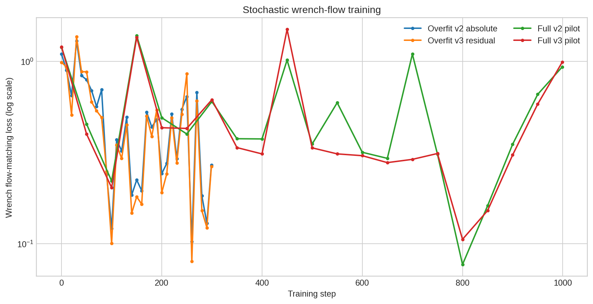
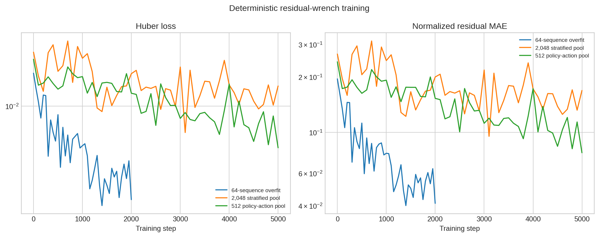
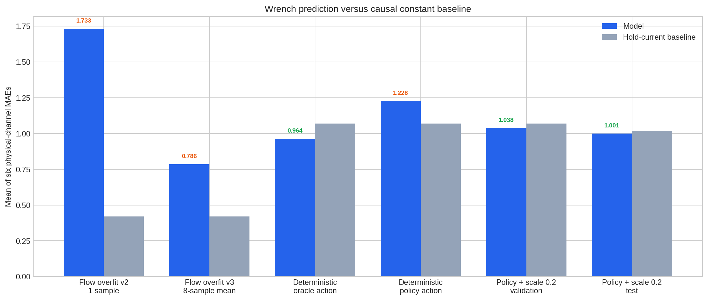
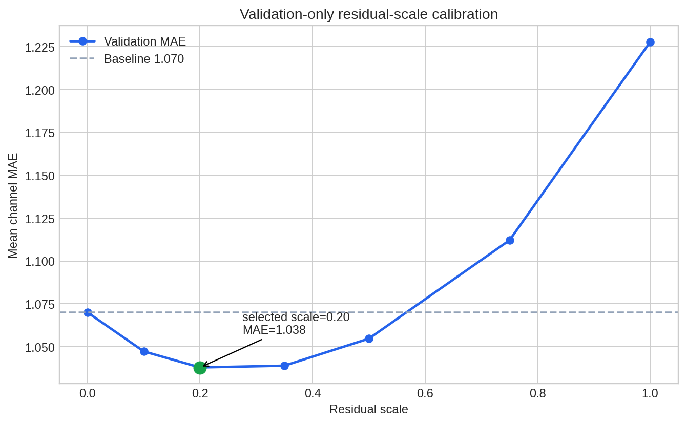
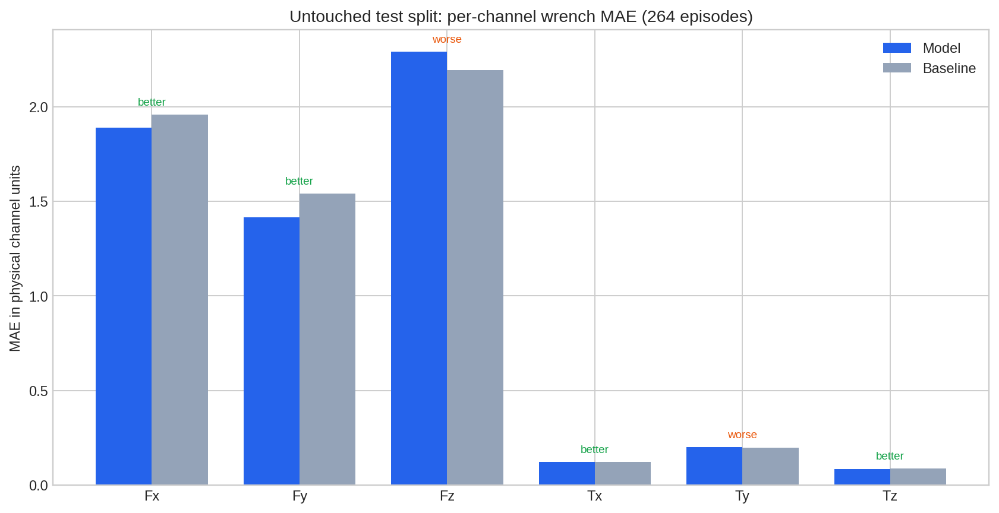
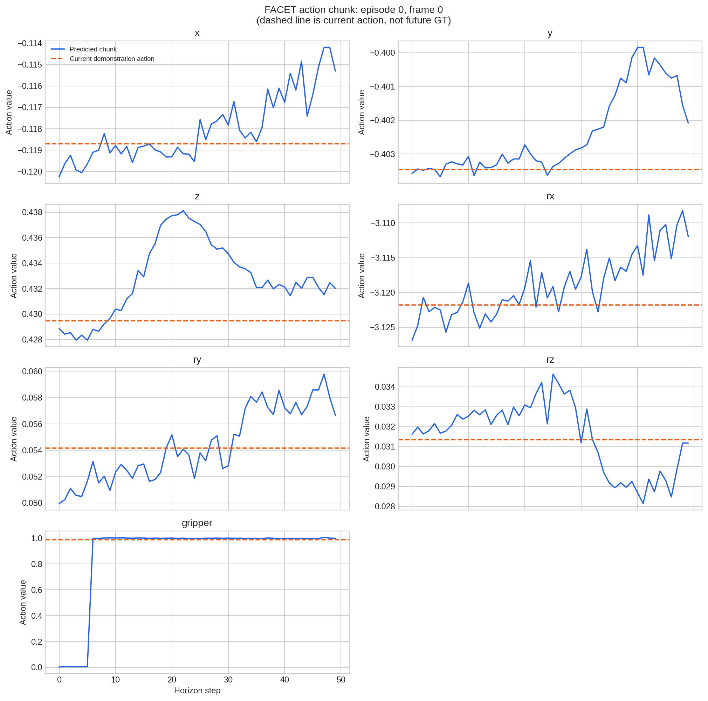
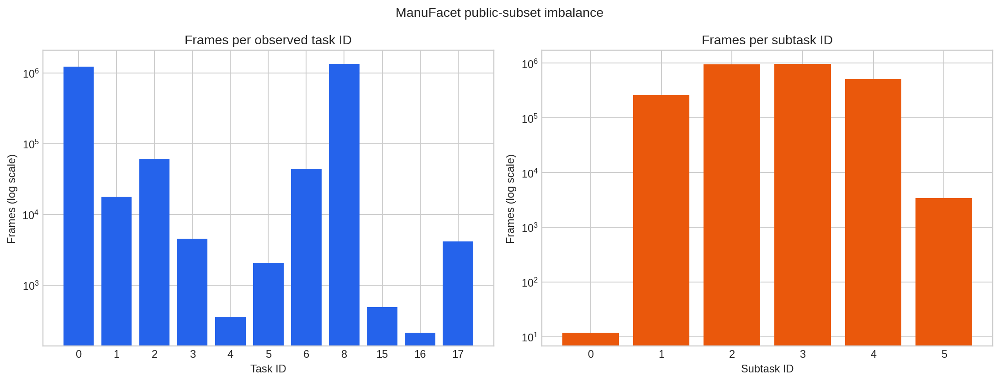

FACET-0 离线复现可视化
公开 checkpoint、ManuFacet 子集与研究性近似模块，生成于 2026-09-07。
重要：这些是开放环离线指标。当前没有真机闭环试验，
不能与论文约 82% 的机器人成功率直接比较。
Validation improvement3.00%
Test improvement1.62%
Test model MAE1.0005
Test baseline MAE1.0170
Automated tests65 passed
Robot success rateNot evaluated
Flow head 训练曲线
归一化修复了数值失稳，但 flow head 的验证 MAE 未超过基线。

确定性 residual 训练
零 residual 等价于常数基线；分层池训练收敛稳定。

实验结果总览
不同报告的采样集合不同，柱图用于展示迭代方向，不作严格横向排名。

Residual scale 标定
scale 只在 validation 选择为 0.2，随后冻结用于 test。

Test 六通道 MAE
264 个 test episodes；模型在 4/6 通道优于基线。

动作块示例
蓝线为模型的 50 步动作；虚线只是当前示范动作，不是未来真值。

公开数据分布
task 0 和 8 占据绝大多数帧，长尾不平衡明显。
